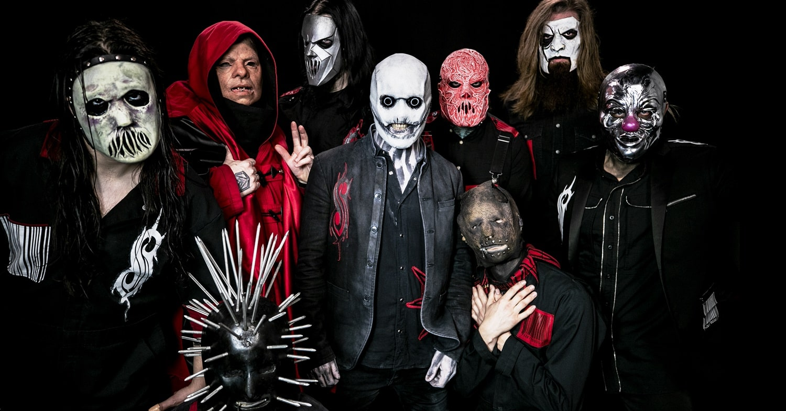

Slipknot é uma banda norte-americana de heavy metal. O grupo foi criado na cidade de Des Moines, capital do estado de Iowa, Estados Unidos, no ano de 1995. Além de se apresentarem mascarados, se destacam também por suas músicas niilistas, sombrias, raivosas e melancólicas. O grupo é formado por nove integrantes: Sid Wilson, Joey Jordison, Chris Fehn, James Root, Craig Jones, Shawn Crahan, Mick Thomson, Corey Tayloe e Donnie Steele.
All Hope Is Gone é o quarto álbum de estúdio da banda de metal norte-americana Slipknot. Foi lançado no dia 26 de agosto de 2008. Slipknot inovou no gênero do seu álbum novo, que costumava ter influências do metal extremo com seu estilo nu metal evidenciado. A preparação para o álbum começou em 2007, enquanto a gravação começou em fevereiro de 2008 em Iowa. All Hope Is Gone é considerado o álbum mais eclético da banda, incorporando elementos de seus três álbuns anteriores. Esse álbum possui uma sonoridade mais melódica comparada aos álbuns anteriores da banda.
Músicas do Album
- .execute.
- Dead Memories
- Gehenna
- 6:53
- Gematria (The Killing Name)
- Butcher's Hook
- Sulfur
- All Hope Is Gone
- Vendetta
- Psychosocial
- Snuff
- Wherein Lies Continue
- This Cold Black